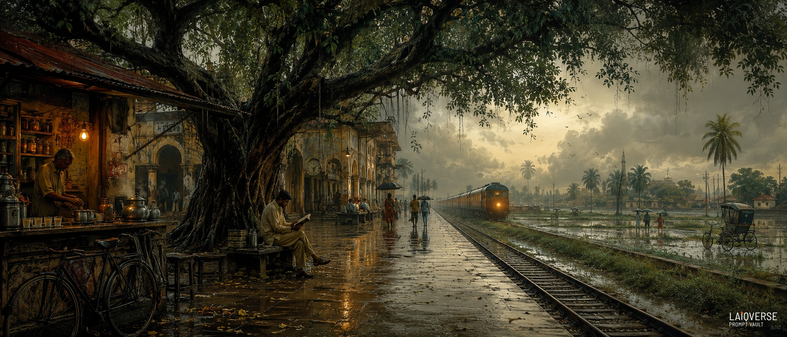
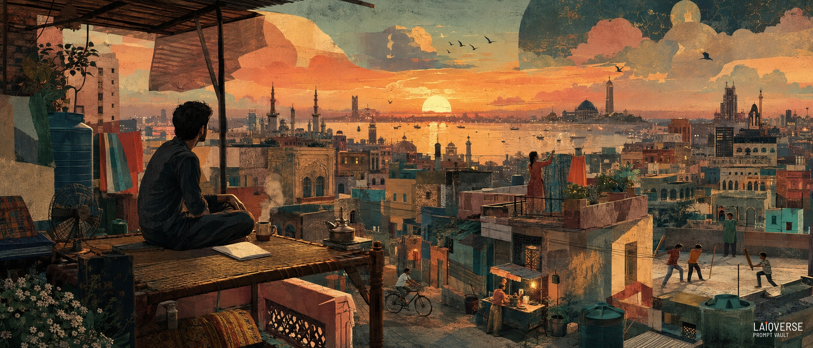
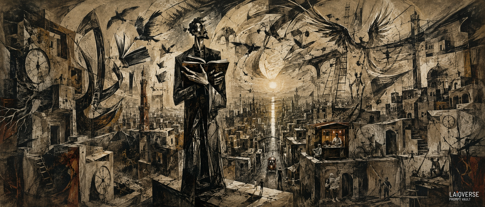
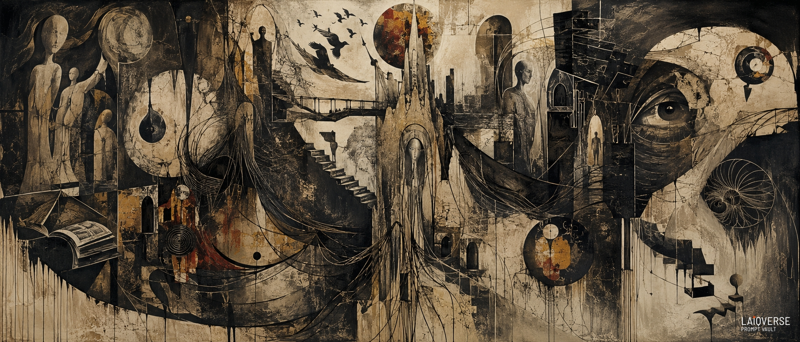
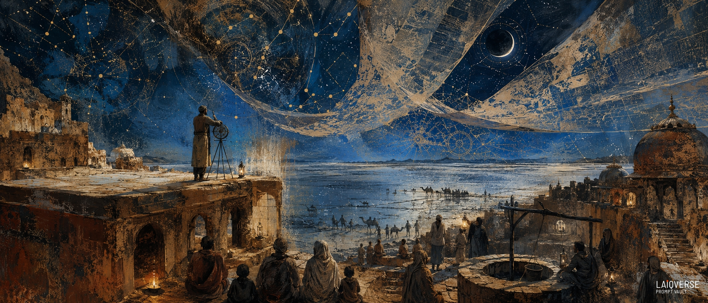
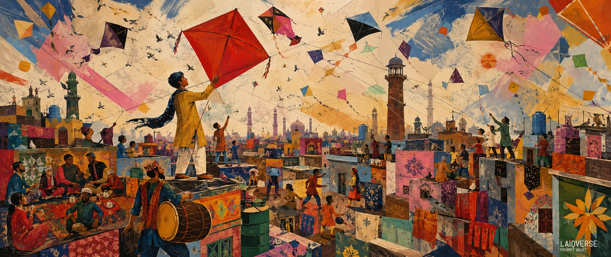

Where wide horizons meet powerful stories

The rain has almost stopped. At a forgotten railway station somewhere in the subcontinent, the platform glistens beneath the fading storm. Water gathers between the railway tracks, reflecting fragments of the gray sky, while the smell of wet earth mixes with the unmistakable fragrance of freshly brewed tea.
Beneath an enormous old rain tree, a solitary traveler sits with a book open in his hands. He isn't waiting for anyone in particular. Or perhaps he is. Across the platform, a tea seller prepares another cup beneath a small amber bulb. A bicycle rests against the wall. An occasional umbrella passes through the mist. Somewhere in the distance, a rickshaw disappears into the wet streets, while children and commuters continue their ordinary journeys.
Then, through the monsoon haze, the train appears. Its light is faint at first — almost indistinguishable from the pale horizon. Slowly, its shape emerges from the mist, carrying countless unseen stories: people leaving, people returning, people searching for places they once called home.
The reader closes his book. For a moment, everything seems suspended — the rain, the train, the tea stall, the birds, even the distant city. The painting lives inside that moment. It is not really about a railway station. It is about the feeling of standing between departure and arrival. About the places we leave behind. About the places we continue to carry within us.
And about the quiet realization that across the vast landscapes of South Asia, millions of lives can look completely different while sharing the same rain, the same tea, the same railway tracks, and the same human instinct to wait for something to arrive.
The train keeps moving. The traveler remains beneath the tree for one last moment. And the monsoon continues.

There is a particular hour in every South Asian city when the day has not completely disappeared, but night has already begun to arrive.
The rooftops become quieter. The heat begins to leave the brick walls. Someone calls a child home. Laundry moves gently in the evening breeze. A kettle begins to whistle somewhere nearby. Lights flicker on, one rooftop at a time, while birds cross the changing sky looking for their final place to land.
On one of those rooftops, a man sits alone on an old charpai. He is not waiting for anyone. He is simply watching. Beside him sits a cup of chai, still warm enough to send a thin trail of steam into the fading air. An open notebook rests nearby, its pages holding thoughts that may never become words. He looks toward the city as if trying to understand something larger than himself.
Below, life continues. Children play cricket between concrete walls. A cyclist disappears into a narrow street. A food seller prepares the evening meal beneath a small glowing cart. On another rooftop, someone hangs the last pieces of laundry before darkness arrives.
Nothing extraordinary is happening. And yet, everything feels important.
Beyond the crowded rooftops, the city begins to dissolve into water, haze and light. Buildings lose their sharp edges. Familiar architectural forms merge together. Domes, balconies, towers, old facades and modern structures become fragments of one immense shared landscape.
The horizon glows one final time. For a few moments, day and night exist together. That is where this painting lives.
It is about the quiet moments that rarely become history—the cup of tea, the rooftop conversation, the cricket game, the evening prayer heard from far away, the fading sunlight on old walls, the stranger cycling home, the notebook waiting to be filled.
It is also about belonging. Across Pakistan, India and Bangladesh, millions of lives unfold within different cities, languages and histories, yet many of their memories occupy the same emotional landscape: rooftops, monsoon skies, crowded streets, chai, family, distance, ambition, resilience and hope.
The man on the charpai could be anyone. Perhaps he is remembering where he came from. Perhaps he is imagining where he is going. Or perhaps, for once, he is simply allowing the city to exist without asking it for an answer.
As darkness slowly takes the sky, the lights of the city begin to appear. One by one. And the night does not feel empty. It feels full of possibility.

The city is still asleep.
There is no traffic yet. The tea stalls are only beginning to open. The streets are empty except for a few workers, a bicycle leaning against a wall and a rickshaw disappearing into the darkness. Above the rooftops, the final hours of night hang heavily over the city.
And then there is the reader. He stands alone on the unfinished roof of a concrete building, holding a book against his chest as though it were something more precious than shelter, wealth or power. His body has become strangely tall, almost impossibly tall, because he represents something larger than an individual man. He is the human mind stretched to its limits—the thinker, the dreamer, the witness.
Around him, the city begins to lose its ordinary shape. Walls become enormous gestures. Buildings twist upward like fragments of forgotten handwriting. Electrical wires cross the sky like nervous lines of thought. Clocks are embedded in stone, frozen at different moments, reminding us that everyone experiences time differently. Books escape their pages and become birds.
The birds rise into the darkness. Some represent freedom. Some represent migration. Some carry memories of places that no longer exist. Others seem to be searching for somewhere they have never seen.
Far away, the sun begins to rise. Its light does not flood the city. Instead, it creates a single narrow path through the darkness, falling toward the solitary reader. It is not a triumphant sunrise. It is a fragile one.
Below him, ordinary life continues. A tea seller prepares the first cups of the morning. An elderly man reads his newspaper. Children move through the streets. Workers begin another day. Someone rides a bicycle. Someone leaves home. Someone is returning. They barely notice the enormous figure above them.
But perhaps that is the point. Civilizations are built not only by concrete, streets and monuments, but by the invisible lives of people who think, remember, question, believe and hope.
The unfinished building beneath the reader is therefore more than architecture. It represents humanity itself—always incomplete, always under construction. The broken clocks speak of mortality. The roots growing through concrete speak of survival. The ladders disappearing into the sky speak of aspiration. The birds speak of freedom. And the book represents the one thing that survives all of them: the human desire to understand.
As dawn finally arrives, the reader remains standing. The city has not changed. The problems have not disappeared. The past has not been erased. But there is light. And sometimes, that is enough to begin again.
The Last Reader Before Dawn is ultimately a painting about knowledge in the middle of uncertainty—the belief that even in a fractured world, a single human mind can continue to imagine another one.

There is no city here. No nation. No beginning. No destination. Only the architecture that every human quietly carries within.
There is no city here.
No nation. No beginning. No destination. Only the architecture that every human quietly carries within.
The towering forms were never buildings. They are the skeletons of forgotten beliefs—the invisible pillars that once supported certainty before time weathered them into questions. Some resemble ancient trees because every thought grows roots. Others resemble broken monuments because every conviction eventually fractures beneath experience.
The faceless figures drift through this immense void without walking. They are not individuals but fragments of every life ever lived. They emerge from charcoal and disappear into stone, suggesting that identity is never fixed—it is continuously carved, erased, and rewritten by memory.
Across the composition, staircases rise confidently toward nothing. Their purpose was never arrival. They represent humanity's endless desire to understand what forever remains just beyond reach.
Doorways appear without walls because every transformation begins long before a path becomes visible.
Broken spheres release birds made entirely of brushstrokes, reminding us that freedom is born not from perfection but from rupture. What appears shattered often becomes the source of unexpected flight.
Ancient books slowly fossilize into geological layers, suggesting that knowledge does not disappear. Given enough time, every idea becomes part of civilization's landscape, buried beneath newer generations waiting to rediscover it.
Roots transform into veins of light, dissolving the distinction between nature and consciousness. The same force that nourishes forests also sustains imagination.
Mirrors no longer reflect faces. Instead, they reveal constellations, implying that the deepest act of self-discovery is not looking inward but recognizing one's place within something immeasurably larger.
The monumental eye watching from the darkness does not judge. It remembers. It witnesses every forgotten dream, every abandoned ambition, every silent act of creation that history never records.
Gravity itself has disappeared. Nothing obeys physical law because this is not the external world—it is the landscape of thought, where emotion determines weight, memory shapes space, and silence possesses greater force than sound.
The restrained palette of carbon black, weathered ivory, ash gray, and traces of oxidized copper evokes an archaeological excavation of the human spirit. Each scraped surface and fractured texture suggests that truth is uncovered through erosion rather than construction.
The Architecture of Unfinished Thought proposes that the human mind is never a completed monument. It is an ever-changing structure, built from memory, altered by loss, strengthened by imagination, and left intentionally unfinished so that each generation may continue its construction. In that incompleteness lies both our greatest uncertainty and our greatest hope.

At the edge of an endless salt desert, where the ruins of an ancient caravanserai disappear into the night, there stands an observatory that seems to belong to no single age.
At the edge of an endless salt desert, where the ruins of an ancient caravanserai disappear into the night, there stands an observatory that seems to belong to no single age.
Long ago, travelers crossed this desert carrying silk, manuscripts, spices, stories and fragments of knowledge from distant civilizations. The caravanserai was their refuge. Its walls witnessed merchants, poets, wandering scholars, astronomers and ordinary families gathering beneath the stars. Over generations, the building collapsed, the caravans disappeared, and the desert slowly reclaimed its courtyards.
But the sky remembered.
On certain nights, an old astronomer returns to the ruins and climbs onto the weathered sandstone platform with his instruments. Around him, silent travelers gather beside the ancient well. Children look upward. Women sit beneath the broken arches. Scholars open forgotten manuscripts. In the distance, a caravan moves slowly across the salt plain like a procession of shadows.
Then something impossible happens. The heavens begin to unfold. Immense celestial maps stretch across the sky like translucent sheets of memory. Ancient constellations overlap with unknown geometries. Architectural fragments float above the horizon. The desert becomes a mirror, reflecting a universe that seems to exist both above and beneath the earth.
The astronomer realizes that he is not merely studying the stars. He is standing at the boundary between the knowledge of the past and the uncertainty of the future.
Every generation has looked upward searching for answers. They have asked where they came from, where they are going, and whether the universe contains a pattern that human beings have not yet understood. In this place, those questions become visible.
The ruined caravanserai therefore becomes more than an archaeological remnant. It becomes a metaphor for civilization itself: constantly breaking apart, constantly rebuilding, and forever carrying knowledge forward.
The people remain silent as the night deepens. No one knows what the celestial maps are revealing. Perhaps they are memories of worlds that disappeared. Perhaps they are maps of worlds yet to exist. Or perhaps they are simply reminding humanity of something it has always known but repeatedly forgotten:
the future does not begin when the past ends. It begins when we learn how to see the past differently.
And beneath that enormous, mysterious sky, the travelers continue to watch. The lamps remain lit. The well remains open. And the astronomer keeps searching.

There is an old belief whispered across the rooftops of Lahore: every Basant, the sky borrows the dreams of the city.
There is an old belief whispered across the rooftops of Lahore: every Basant, the sky borrows the dreams of the city.
In this painting, the rooftops are more than bricks and walls—they are stages where generations meet. Grandparents pour steaming tea into clay cups, musicians awaken forgotten rhythms with the dhol, children sprint with tangled spools of thread, and neighbors become teammates and rivals beneath the same open sky. Every rooftop tells its own story, yet together they form one living heartbeat.
At the center stands a young kite flyer, holding a magnificent crimson kite before its release. The kite is not merely paper and bamboo—it carries hope, memory, courage, and the weight of countless unspoken wishes. Around it, hundreds of strings stretch across the heavens like invisible connections between strangers, families, and centuries of tradition. They cross, tighten, and drift apart, reminding us that lives often become meaningful through the people they touch.
The flattened architecture and layered perspectives refuse to obey ordinary reality. Time folds into itself. Yesterday's Lahore stands beside today's, while echoes of Mughal heritage, folk craftsmanship, and contemporary city life coexist in a single vibrant moment. Decorative patterns inspired by truck art bloom across walls and rooftops, transforming everyday surfaces into celebrations of identity, resilience, and imagination.
Above, the sky becomes a vast woven tapestry of soaring kites, circling pigeons, fractured clouds, and sweeping ribbons of color. It is no longer just a backdrop—it is the emotional landscape of the city itself. The swirling forms suggest freedom balanced with fragility, for every kite flies only because it remains connected to the hand that guides it.
As the final golden sunlight washes across the rooftops, long shadows unite the figures into one collective composition. Individual stories dissolve into a shared celebration, where laughter, music, competition, and community become inseparable.
Threads That Hold the Sky is ultimately a painting about connection. It reminds us that cultures are not preserved in monuments alone, but in ordinary moments shared between people—on rooftops, beneath open skies, where a single crimson kite can carry an entire city's spirit into the wind.